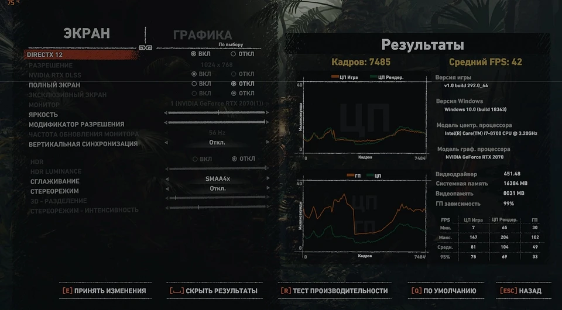

Обзор компактного игрового компьютера Predator Orion 3000
Внешний вид
ПК выполнен в форм-факторе miniATX и имеет следующие габариты: 350 х 340 х 163 мм. Вес приблизительно равен 7,5 кг, что значительно меньше, чем у полноразмерных решений. При желании можно с легкостью переносить компьютер с места на место. Сильного дискомфорта это не вызовет.

Материал корпуса — металл, за исключением передней панели, которая сделана из пластика. В качестве цветового решения производитель выбрал черный цвет. В верхней части лицевой панели располагается кнопка включения, которая имеет голубую подсветку. Также подсвечиваются боковые вставки и кулер. Стоит отметить, что последний слегка отличается по оттенку и выбивается из общей картины. По бокам расположились небольшие держатели, предназначенные для наушников: это очень простая, но полезная фишка, которая почему-то редко встречается.
В нижней части передней панели находится фирменный логотип и несколько интерфейсов: пара USB, один из которых Type-C, а также аудиоразъемы для наушников и микрофона. Поскольку ПК позиционируется как настольное и компактное решение, то нижнее расположение интерфейсов не вызывает вопросов. Однако, на наш взгляд, верхняя компановка была бы более практичной.
Боковые крышки ничем не примечательны. Прозрачное пластиковое или стеклянное окно — отсутствует. А взглянув на заднюю поверхность, становится понятно, что производитель выбрал верхнее расположение блока питания, что может вызывать некоторые вопросы. Но об этом позже. Также БП не окрашен в черный цвет, что, по нашему мнению, тоже идет вразрез с общей стилистикой. Чего нельзя сказать о заглушке для портов материнской платы, ведь она имеет черный окрас.
Рядом с интерфейсами, встроенными в материнскую плату, расположился кулер на выдув горячего воздуха, а под ним видеокарта с выходами HDMI, DVI и 3хDisplayPort. Пожалуй, самая удачная конфигурация на сегодняшний день.
Характеристики
Видео карта: RTX 2070 в исполнении компании Sapphire.
В левом верхнем углу расположился блок питания мощностью 500 Вт от LiteON, сертификация — Bronze Plus.
Также эстетичный внешний вид портится из-за обычного боксового кулер. Под ним расположился процессор Intel Core i7-8700.

В качестве оперативной памяти разработчик выбрал 2 модуля по 8 Гбайт каждый. Планки одноранговые, работают на частоте 2666 Мгц. Производитель чипов - SK Hynix. Внешний вид ОЗУ подстать материнской платы: максимально простое визуальное исполнение.
За боковой металлической панелью скрывается жесткий диск на 2 Тбайт.
Тестирование
Первым делом нам захотелось проверить, как ощущает себя процессор с таким простым охлаждением. Многие игры не способны нагрузить ЦПУ по полной программе, поэтому воспользуемся синтетикой. Мы запустили относительно простой бенчмарк, встроенный в AIDA64.
Практически сразу после запуска теста она повысилась до 86 и показалось, что дальше будет только хуже. Однако мы даже и не услышали, как лопасти вентилятора достигли скорости 3000 оборотов в минуту. И тогда температура снизилась до 82 градусов и так и держалась на этом значении. При этом уровень шума практически не изменился. Потрясающие и неожиданные результаты для такого скромного охлаждения, но хотелось бы увидеть не такое большое значение температуры.

Что касается накопителей, то Crystal Disk Mark показывает следующие результаты:
Вывод
Predator Orion 3000 — это высокопроизводительное компактное решение с хорошим балансом комплектующих, предназначенное для современных игр. И хоть с поставленной задачей ПК справляется на ура, он всё же не лишен недостатков. Впрочем, из всех имеющихся минусов в качестве основного можно выделить только один — слабая система охлаждения видеокарты. На остальные недочеты можно закрыть глаза и наслаждаться стильным внешним видом и отличными скоростными показателями.